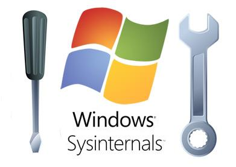
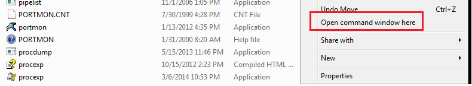
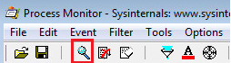

Intro duction
Welcome to the Third part of the assignment that demonstrates how an administrator may perform some basic tasks in order to detect and analyze a suspicious piece of software. Malware is constantly getting more sophisticated bypassing traditional defensive mechanisms such as antiviruses and intrusion detection systems. An administrator or specialized security professional, in properly sandboxed and secure environments can perform dynamic analysis of malicious software (i.e. execute it) in order to monitor the actions it performs (e.g. creating/accessing files, establishing external network communications etc.). A malicious file can reach a system through various means such as download from a web page or an email attachment by an unsuspected user, social engineering techniques or even direct exploitation of a software vulnerability present on the system.
The objectives of this part
Obje ctives
- Understand the process of dynamic analysis of malware
- Gain an insight on how security professionals examine and analyze new threats and malware infections.
Tools
SysInternals

SysInternals is a set of tools that can be used by Windows administrators for diagnostic, troubleshoot and security purposes. They provide features for an in-depth examination of how the Windows OS, user processes, the system's disk and memory function and are often employed in malware analysis efforts due to their advanced capabilities.
Tasks
We have copied on your VM's Desktop, an executable file named payload.exe. This file has been created by the Social Engineering Toolkit (SET - https://www.trustedsec.com/downloads/social-engineer-toolkit/) and is the result of the several methods the tool provides to create malicious file and spread them to victims (e.g. over web or email).
- On your VM's Desktop, there is a folder named SysinternalsSuite. Open the folder, keep pressed the Left Shift keyboard button and right click in an empty area of the folder and then select the option 'Open command window here'.This will give us a command prompt to the specific folder so as to execute some of the command-line applications later on

- Switch back to the Sysinternals folder and double click the procmon (Process Monitor) application in order to run it.
- In the Process Monitor application, click on the Filter toolbar icon and then Include a new rule that the process name is payload.exe and then Add it and finally Apply.

- Double-click the payload.exe executable located in your Desktop. After agreeing to run it, the screen of the procmon application should start getting filled with entries.You can use the toolbar icons on the right to isolate file system, network, registry and process activity related events.
- Does the executable attempt to communicate to another system?
- An antivirus engine may not always be able to detect a new type of malware or one that is intentionally made difficult to analyse (e.g. encrypted, obfuscated etc.).It is a good practice to examine a suspicious file against as many antivirus engines as possible given that not all antivirus software perform equally well. One such online service is VirusTotal where one can upload a file and have it checked by almost all known antivirus engines.
- Submit the file and check the results. Did it have a high or low detection success ratio?